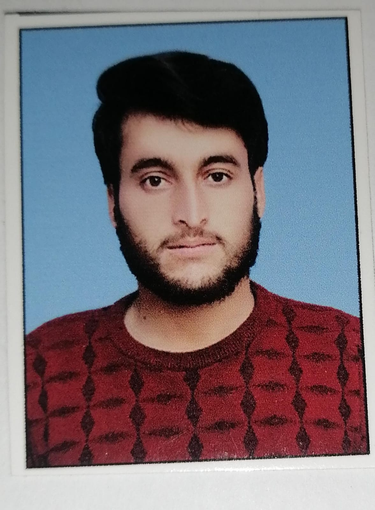

Nasir Hussain Sajidi

cell: 03408519129
Home: b169 block 4A
SUMMARY
Experienced CFO in multi-entity environments. Seventeen years' experience in executive financial roles including VP, FD and CFO designations
- Analytical Tools> Designs and implements reporting tools improve process flows of information.
- Operations: Manages Sccountin and IT departments of staff compliments exceeding 100 individuals.
- Infrasturr: Implementation of IT and according structure to establish collaborative relationships with all departments within the organization.
- Taxation: develops solutions to minimize tax liabillities and ensure compliance to both regional and local povernmental taxt laws.
EDUCATION
M.B.A. Master of Business Adminixtration-University of Connecticut, 2005
M.M. Masterr of Financial Management and Information Systems-university of Dailas, 1989
B.S. Bachelor of Science Business Accounting-
PROFESSIONAL EXPERIENCE
Chief Financial officer
ODICHEM, Inc. Austin
December 2014 - Current
- An international chemical company that develops and manufactures products for various industries across the globe. Manufacturing plants in: the USA, Europe, Africa and South East Asia.
- Adjusted debt leverage and fixedn asset ratio's by curatung a bank credit facility to allow for significant increased borrowing capabilities to fund several short-term invvestments. This decreased the external investment risk which enabled the company to meet required namk covenants.
- crafted amd o,[;e,emted a capital investment and return process . This greenfield process included modelling and illustrative displays of financial results from projected investment projects and their effects on the holding company cash flow and now product line launches. The results depict all finacial metrics and returns (IRR) . The model assisted the Board gain approval for capital investments.
- Revamped and streamlined the forecasting system which automatically eliminated the need lingthy dataconsolidation exercises from all inter-company rransactions and produces kiy statistic pages.
- Designed a plane to repatriate cash build in a foreign entity. this entailed the restructuring and consolidation of certain key foreign entities to effect payables from the foreign country to the home country which in turn opened repatriation of profile of current and future cash flows.
- Implemented a standardized comparative benchmark initiative. The benchmark comparse all financial results of the company (Income Statement, Balance Sheet and Cash flows) to relevant industry and other similar type company results. This tool added most value in developing strategy and overall
company direction.